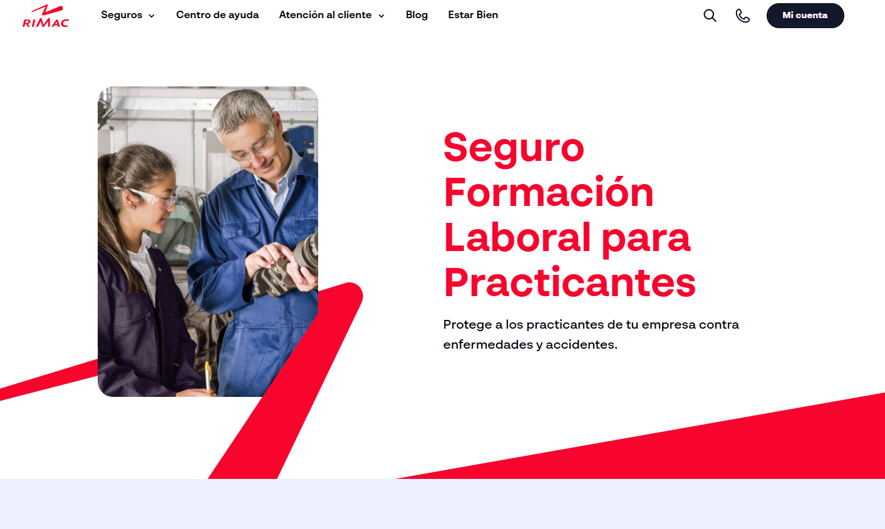

Estar Bien – Plataforma Educativa Rimac
Contexto
“Estar Bien” es la plataforma de bienestar y formación interna de Rimac Seguros, creada para capacitar a colaboradores mediante cursos, exámenes interactivos, recursos multimedia y seguimiento de progreso.
Rimac necesitaba un entorno digital robusto que permitiera administrar contenidos educativos, gestionar alumnos, registrar evaluaciones y garantizar un acceso seguro mediante integración con su sistema corporativo de autenticación.
Solución Implementada
Se desarrolló un CMS educativo a medida utilizando Laravel, con un panel administrativo completo y un front office moderno, responsivo y optimizado para una experiencia de usuario fluida en cursos y evaluaciones.
Front Office – Plataforma educativa
- Acceso seguro mediante autenticación SAML (Single Sign-On corporativo).
- Visualización de cursos asignados por categoría y nivel.
- Acceso a exámenes con puntaje y validaciones.
- Historial de cursos, exámenes aprobados y progreso.
- Interfaz responsiva y amigable para colaboradores.
Back Office – Gestión administrativa
- Gestión completa de cursos (creación, edición, materiales, estado).
- Gestión de exámenes con preguntas, alternativas y puntuación.
- Gestión de alumnos y asignación de cursos.
- Gestión de usuarios y roles administrativos.
- Reportes y estadísticas de progreso académico.
Tecnologías Utilizadas
- PHP – Framework Laravel
- MySQL como base de datos principal
- Bootstrap para maquetación responsiva
- SAML para autenticación corporativa
- HTML5 · CSS3 · JavaScript
- VPS Linux (Ubuntu) para despliegue en la nube
Despliegue e Infraestructura
- 1 servidor web en VPS (Ubuntu Linux)
- 1 servidor de base de datos MySQL
- Configuración optimizada para cursos multimedia y tráfico interno
Resultados Clave
- Centralización total de la capacitación interna de Rimac.
- Mayor control académico y seguimiento de colaboradores.
- Experiencia formativa moderna, responsiva y fácil de usar.
- Reducción de carga operativa gracias al CMS personalizado.
- Integración fluida con el ecosistema corporativo vía SAML.
Mockups del Proyecto
Vistas referenciales del front office, panel administrativo y flujo de cursos.